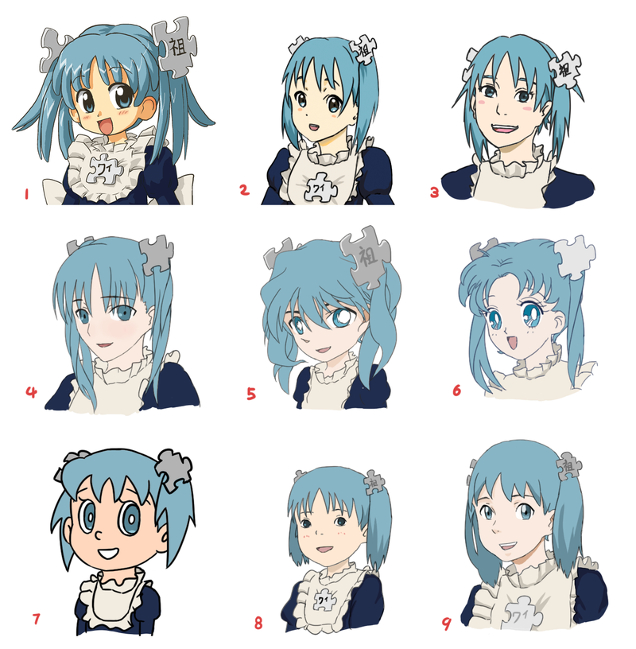
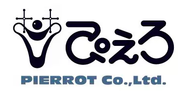
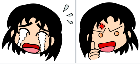
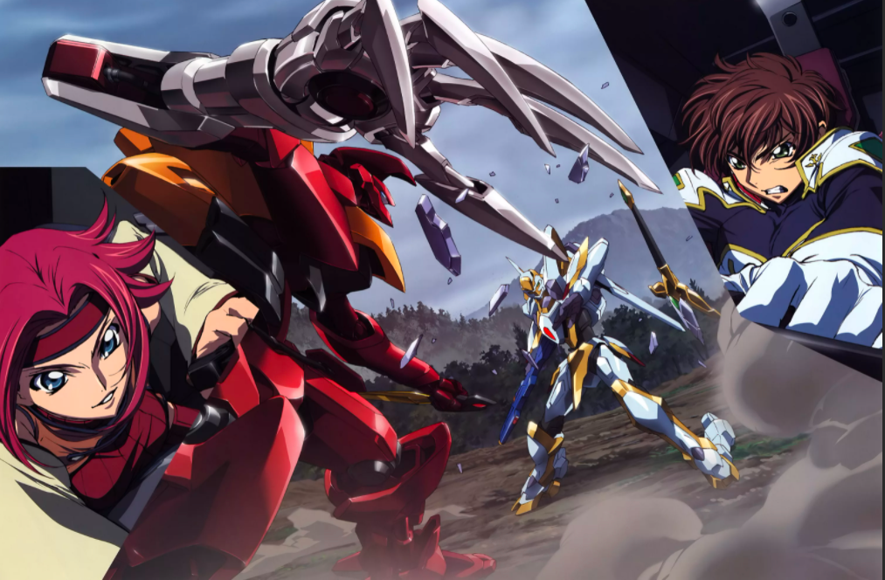
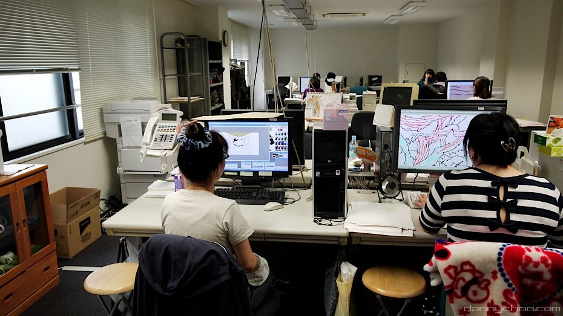

Anime este o animație desenată manual și computerizată originară din Japonia.În Japonia și în japoneză, anime (un termen derivat din cuvântul englez animație) descrie toate lucrările animate, indiferent de stil sau origine. Cu toate acestea, în afara Japoniei și în engleză, anime-ul este colocvial pentru animația japoneză și se referă în mod specific la animația produsă în Japonia. Animația produsă în afara Japoniei într-un stil similar animației japoneze se numește animație influențată de anime.

Cele mai vechi animații japoneze comerciale datează din 1917. Un stil de artă caracteristic a apărut în anii 1960 cu lucrările caricaturistului Osamu Tezuka și s-a răspândit în deceniile următoare, dezvoltând un public intern numeros. Anime-ul este distribuit teatral, prin emisiuni de televiziune, direct la mass-media de acasă și pe Internet. Pe lângă lucrările originale, anime-urile sunt adesea adaptări ale benzilor desenate japoneze (manga), romane ușoare sau jocuri video. Este clasificat în numeroase genuri care vizează diverse audiențe largi și de nișă.
Anime este un mediu divers cu metode de producție distincte care s-au adaptat ca răspuns la tehnologiile emergente. Combină arta grafică, caracterizarea, cinematografia și alte forme de tehnici imaginative și individualiste. în comparație cu animația Occidentală, producția de anime se concentrează în general mai puțin pe mișcare și mai mult pe detaliile setărilor și utilizării "efectelor camerei", cum ar fi Panoramarea, zoom-ul și fotografiile unghiulare. se folosesc diverse stiluri de artă, iar proporțiile și trăsăturile caracterului pot fi destul de variate, o caracteristică comună fiind ochii mari și emotivi.
Industria anime este formată din peste 430 de companii de producție, inclusiv studiouri majore precum Studio Ghibli, Sunrise, Bones, Ufotable, MAPPA, CoMix Wave Films și Toei Animation. Începând cu anii 1980, mediul a cunoscut, de asemenea, succes internațional odată cu creșterea programării dublate, subtitrate străine și a distribuției sale în creștere prin servicii de streaming. Începând cu 2016, anime-ul japonez a reprezentat 60% din emisiunile de televiziune animate din lume.
În 2019, exporturile anuale de animație japoneză de peste mări au depășit 10 miliarde de dolari pentru prima dată în istorie.
Unii din cei mai renumiti autori de manga si anime sunt:
- Hayao Miyazaki
- Masashi Kishimoto
- Eiichiro Oda
Muzica
Intro-urile și creditele majorității seriilor anime sunt însoțite de melodii J-pop sau J-rock, adesea de trupe cunoscute—așa cum sunt scrise cu seria în minte—dar vizează și piața muzicală generală, așa că adesea sugerează doar vag sau nu se referă deloc la setările tematice sau la complotul seriei. În plus, ele sunt adesea folosite ca muzică episodică ("inserții de melodii") într-un episod pentru a evidenția scene deosebit de importante.
Genuri
Anime - ul este adesea clasificat în funcție de publicul țintă, inclusiv pentru copii (_bos_ XV, kodomo), pentru femei (sec, sec, sec), pentru bărbați (sec, sec, sec, sec) și o gamă largă de genuri destinate unui public adult. Anime-ul Shoujo și shounen conțin uneori elemente populare pentru copiii de ambele sexe, în încercarea de a câștiga atracție încrucișată. Anime-ul pentru adulți poate fi caracterizat printr-un ritm mai lent sau o complexitate mai mare a complotului, pe care tinerii spectatori le pot găsi de obicei neatractive, precum și teme și situații pentru adulți.
Un subset de anime pentru adulți funcționează cu elemente pornografice este etichetat în Japonia ca "R18" și este cunoscut la nivel internațional sub numele de hentai (derivat din pervertit (VIII, hentai)). În schimb, unele subgenuri anime includ ekki, teme sexuale sau subtexte fără a descrie actul sexual, așa cum este tipic genurilor de comedie sau harem.; Datorită popularității sale în rândul adolescenților și pasionaților de anime adulți, includerea unor astfel de elemente este considerată o formă de serviciu pentru fani.
Explorați romane homosexuale precum Yaoi (homosexualitatea masculină) și Yuri (homosexualitatea feminină). Deși adesea folosiți într-un context pornografic, termenii yaoi și yuri pot fi, de asemenea, utilizați pe scară largă într-un context mai larg pentru a descrie sau a se concentra pe subiecte sau dezvoltarea relației în sine.
Clasificarea genului anime diferă de alte tipuri de animație și nu se pretează la o clasificare simplă. Gilles Poitras a comparat etichetarea Gundam 0080 și descrierea sa complexă a războiului ca un anime "robot gigant" asemănător cu simpla etichetare a războiului și a păcii de către un "roman de război". Science fiction-ul este genul principal al anime-ului și include lucrări istorice importante, cum ar fi Tezuki 's Astro Boy și Yokoyama' s Tetsujin 28-go.
Principalul subgen al science fiction-ului este mecha, iar metaseriile Gundam sunt iconice. Genul fantezist divers include lucrări bazate pe tradiții și folclor asiatic și Occidental; exemplele includ povestea feudală Japoneză Inuyashai reprezentând zeițe scandinave care se mută în Japonia pentru a susține un computer numit Yggdrasil în Ah! Zeița Mea.
Intersecția genului în anime este, de asemenea, obișnuită, de exemplu, un amestec de fantezie și comedie în Dragon Half și includerea umorului slapstick în filmul anime criminal Castelul din Cagliostro.Alte subgenuri găsite în anime includ fată magică, harem, sport, arte marțiale.
Condiții de muncă
În ultimii ani, industria anime-urilor a fost acuzată atât de mass-media japoneză, cât și de cea străină că a plătit și a suprasolicitat animatorii săi. Ca răspuns, premierul japonez Fumio Kishida a promis că va îmbunătăți condițiile de muncă și salariile tuturor animatorilor și creatorilor care lucrează în industrie.Mai multe studiouri anime, cum ar fi MAPPA, au luat măsuri pentru îmbunătățirea condițiilor de muncă ale angajaților lor.În timpul pandemiei COVID-19, a existat, de asemenea, o ușoară creștere a costurilor de producție și a plății pentru animatori.